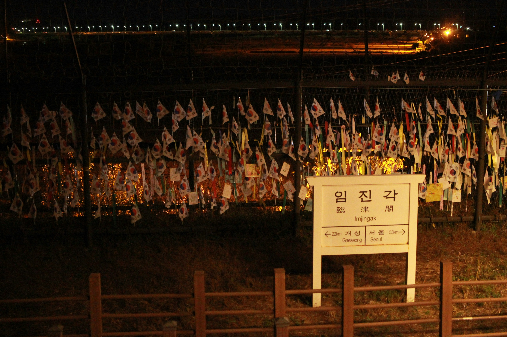

Mending the Wall

It was uncharacteristically quiet. Or perhaps it wasn't uncharacteristic at all, but rather a failure of my imagination. After rewatching war films such as All Quiet on the Western Front and Saving Private Ryan, I had pictured soldiers huddled behind barricades, rifles standing stiffly beside them or cradled beneath green uniforms, anxiously awaiting the next attack. I should have known better; they call it a demilitarized zone for a reason. Yet years of hearing about the ongoing conflict between North and South Korea, separated only by an armistice agreement, had cultivated vivid images of war and violence in my mind. For my generation, the two countries seem inseparable from the specter of conflict, despite the fact that less than a century has passed since the peninsula was bloodily riven.
From the narrow gaps in the bars in the window of the bus that took us around the DMZ, I could see the never-ending rows of high walls, crowned with coils of barbed wire. Each large loop is dotted with long, prickly shards of metal whose only role was to sear through the softness of the human flesh. The intensity reminded me of a line from Robert Frost’s Mending Wall, “Good fences make good neighbors.” From a young age, I had been told that the border between the North and the South was a bulwark, not just physically but socially. It prevented the rampant rise of authoritarianism that had so gravely vitiated the North. The wall cooled the ideological tensions of the past, tensions that have repeatedly been told could never be rectified. Yet it seems like all the wall does is let millions of people on both sides live in the midst of a haphazardly stitched up wound, one that might come apart at any minute, and will never truly heal.
The boxy bus dropped us off atop a mountain, where binoculars dotted the observation area. I dug through my pocket and found just enough change to glimpse the country I had grown up hearing about but will most likely never visit. Beyond the barbed wire, watchtowers, and decades of hostility, however, lay an unexpected beauty. Green hills rolled lazily across the landscape, and the same blue sky stretched over the "other side.” In that moment, it seemed the barriers had not entirely extinguished hope. I imagined families torn apart by the division looking up at the same endless sky and finding solace in its shared expanse. Though the memories they should have created together were stolen by the barbed wire, they still remained under the same sky.
Frost’s words “Something there is that doesn’t love the wall,” resonated most at this moment, because behind division lay something that could never truly be separated by the vicious and never-ending cycle of conflict, human connection. Despite the constant permeance of historical conflict into our modern society, there are still those who deeply value the shared human connection, helping those who arrive with shelter and education, playing a critical role in rebuilding lives. It is human connection that serves as an impetus for volunteers helping in the meeting of families torn apart from each other several decades ago, and the small flicker of hope of reconciliation between the two countries.
Pragmatically, reunification is not economically viable, and is becoming more unfavorable to the younger generation who correctly understands that the South would have to bear the brunt of the cost of reunification. However, my visit to the DMZ reminded me that while political union is unlikely, the same sky stretches over both nations, indifferent to ideology or barbed wire, reminding us that while walls may divide territory, they cannot completely sever the connections that bind the two nations together.